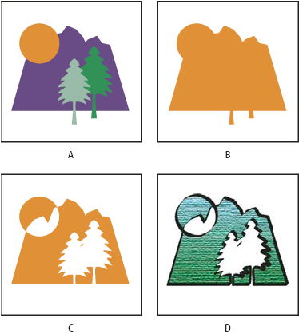

About compound shapes
A compound shape is editable art consisting of two or more objects, each assigned a shape mode. Compound shapes make it easy to create complex shapes because you can precisely manipulate the shape mode, stacking order, shape, location, and appearance of each path included.
Compound shapes act as grouped objects and appear as <Compound Shape> items in the Layers panel. You can use the Layers panel to show, select, and manipulate the contents of a compound shape—for example, to change the stacking order of its components. You can also use the Direct Selection tool or the Group Selection tool to select components of a compound shape.
When you create a compound shape, it takes on the paint and transparency attributes of the topmost component in Add, Intersect, or Exclude mode. Subsequently, you can change the paint, style, or transparency attributes of the compound shape. Illustrator facilitates this process by automatically targeting the whole compound shape when you select any part of it, unless you explicitly target a component in the Layers panel.

- A.
- Original objects
- B.
- Compound shape created
- C.
- Individual shape modes applied to each component
- D.
- Style applied to entire compound shape